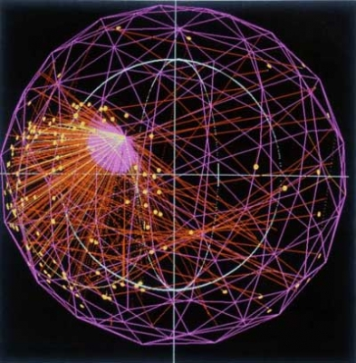
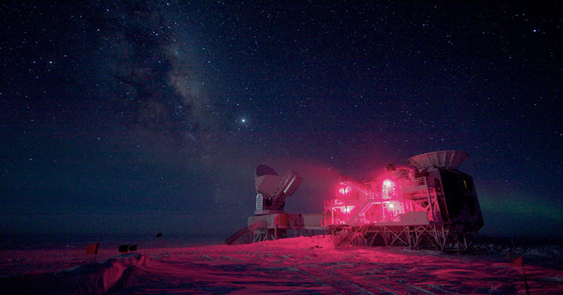

Finding Neutrino
Expedition Journal: The Energy of Waves
Out on the sea-ice stand the two tallest buildings on the continent -- the IceCube Lab where scientists search for almost undetectable subatomic particles -- neutrinos.
How tall is the IceCube array compared to the Empire State Building?
{kind=link}
The "IceCube" Telescope
The Neutrino Detection Project, lead by Dr. Peter Gorham, a physicist from the University of Hawaii, was the first scientific group to detect the highest energy neutrinos in the universe. He excitedly gushes (though still struggles finding the words to describe something he's only beginning to understand): "The neutrino is the most ridiculous particle you can imagine. They exist, but we can't get our hands on them, because they seem to just exist in another place. And, as a physicist, even though I understand it mathematically, and I understand it intellectually, it still hits me in the gut that there is something here, surrounding me, almost like some kind of spirit or God, that I can't touch, but I can measure it. I can make a measurement. It's like measuring the spirit world, or something like that... From Encounters at the End of the World (2007)
 “Neutrinos are electrically neutral leptons, and interact very rarely with matter. When they do react with the molecules of water in the ice, they can create charged leptons (electrons, muons, or taus). These charged leptons can, if they are energetic enough, emit Cherenkov radiation. This happens when the charged particle travels through the ice faster than the speed of light in the ice, similar to the bow shock of a boat traveling faster than the waves it crosses. This light can then be detected by photomultiplier tubes (PMTs) within the digital optical modules (or DOMs) making up IceCube. Even though it is located in Antarctica, IceCube is more sensitive to point sources more in the northern hemisphere than the southern. It can observe astrophysical neutrino signals from any direction, but in the southern hemisphere these neutrinos are swamped by the downgoing cosmic-ray muon background.” - More
Neutrinos carry away most of the gravitational energy released by the collapse of massive stars. Electric charge-free and with an extremely small mass (0.1 eV or greater, compared with about 0.5 MeV for the electron), it is considered a key element, because it can relate both with matter and dark matter - if there is such a thing.


Computer data shows a neutrino impact amid IceCube's hollow columns.
Through our eyes the universe is perceiving itself... - Alan Watts
"In 2013, the IceCube neutrino experiment at the South Pole reported the observation of two ultra-high-energy neutrino events, which they named after Sesame Street characters Bert and Ernie. The third, they nichknamed "Big Bird".
{kind=link}
In 2018 Astronomers traced a high-energy neutrino to its cosmic source for the first time, the jets of a Blazer black hole which points in our general direction from within the Orien constellation. Cosmic rays are emitted simultaneously, but their charged nature causes them to take a meandering path.

The 10-meter South Pole Telescope and the BICEP (Background Imaging of Cosmic Extragalactic Polarization) Telescope against the Milky Way. BICEP2 recently detected gravitational waves in the cosmic microwave background, a discovery that supports the cosmic inflation theory of how the universe began. (Photo: Keith Vanderlinde, National Science Foundation)
Great moments in science - a toast to the inflation of the universe.
The Energy of Waves
Through our eyes the universe is perceiving itself - Alan Watts
At the opposite pole, the Inuit man paddles harder and harder, left, right, left, right. On the edge of air and water, his kayak glides past walls of ice and rocky outcroppings. Faster he glides, with each even stroke accelerating the craft on the smooth surface away from the turbulent shoreline.
This morning I gradually awoke, still gliding along the icy artic coast, the voice of an elder in my mind. “When you travel the surface between elements, find the rhythm and there you will move faster than amoung either element alone.”
As I paddle, near the massive outcropping, my efforts are slowed. Buffeted by waves as they bounce off the rocks and set my boat rocking, counter to my efforts. It is not until I adjust my strokes to use the rocking to my advantage that I can use the rhythmic waves to increase my speed.
"It's similar to the waves we see on the ocean," said Unruh. "They are not affected by the intense dance of the individual atoms that make up the water on which those waves ride."
More: Solving one of nature's great puzzles: What drives the accelerating expansion of the universe?
TeVeS - I Still Believe
Yesterday we found another guest to invite...
Chinese astronomer Sheng Zhao.
Tensor-vector-scalar gravity (TeVeS) – a 'simple' formula that explicitly tells how gravity should behave in the transition zone between the solar system, where the golden laws of Newton and Einstein apply, and the outskirts of galaxies. It’s a MOND theory that works perfectly for most galaxies. But it has yet to explain the bullet cluster. MOND stands for MOdified Newtonian Dynamics, discovered by the Israeli physicist Prof. Dr. Mordehai Milgrom.
“Under MOND, mass is much more effective at bending space-time than under General Relativity, so it takes less stuff in the universe to account for all the gravity we measure. When applied to just galaxies, MOND can predict very well the behavior that astronomers observe. But when MOND is applied to larger structures like clusters of galaxies, it fails. To make MOND work for clusters, it must include more complicated concepts, such as entities called dark fields, which are different from dark matter, but work in a similar way to alter the amount of gravity present.”
"One primary success of TeVeS is that it provides an enhancement of gravitational lensing, which could not be achieved by other MONDian theories." - 2005 How Would Galaxies Form in a Universe Without Dark Matter? Researchers Find Out 2020 - https://scitechdaily.com/how-would-galaxies-form-in-a-universe-without-dark-matter-researchers-find-out/
The Bullet cluster and others exhibit that under the right conditions, gravity exhibits non-local effects. One of the surviving MOND theiries is MOG: a theory of gravity with non-local effects akin to quantum physics on the scale of galaxy clusters (perhaps when the relative absense of matter in the surrounding universe exerts less influence).
“Shapiro delay - Radar signals passing near a massive object take slightly longer to travel to a target and longer to return than it would if the mass of the object were not present.” Time is delayed for light traveling around a single mass.
Pole to Pole
Back in the Inuit villiage, a group of colorfully dressed children are winding ribbons around a May pole. Braiding colors to a circling rhythm.
The May Day celebration has ended and the older boys have the task of removing the pole. The first two tug and push to no avail, stuck in the frozen mud. A third, smaller boy, approaches the pole and sets his hand on it and gives a little push. Then another gentle push, and another, and soon the top of the pole is vibrating back and forth. With a slight upward push of his hand with each nudge, the bottom of the pole slowly rises out of the permafrost.
Back and forth, back and forth. Pole to pole.
Langford had dropped out of college to pursue a dream of returning ice to polar regions using a Peltier element to produce ice without energy. But then the chilling technology we were developing took a profitable turn to become the very popular "PopBox" curb-side fridge business you know of today. Designed so the lids were flush with ground level, the solar panel on the lid allowed the box to also heat a meal as residents returned home.
Continue: Finibus Tour